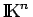

Eine linear unabhängige Teilmenge B aus  , die den gesamten Raum
, die den gesamten Raum  erzeugt, d.h. für die gilt, nennt man (algebraische) Basis oder HAMELsche Basis des Vektorraumes
erzeugt, d.h. für die gilt, nennt man (algebraische) Basis oder HAMELsche Basis des Vektorraumes  . Also ist genau dann eine Basis von
. Also ist genau dann eine Basis von  , wenn sich jeder Vektor
, wenn sich jeder Vektor  in der Form darstellen läßt, wobei die Koeffizienten eindeutig bestimmt sind und lediglich eine endliche (von x abhängige) Anzahl von ihnen von Null verschieden ist. Jeder nichttriviale Vektorraum
in der Form darstellen läßt, wobei die Koeffizienten eindeutig bestimmt sind und lediglich eine endliche (von x abhängige) Anzahl von ihnen von Null verschieden ist. Jeder nichttriviale Vektorraum  (d.h. ) besitzt wenigstens eine algebraische Basis, und zu jeder linear unabhängigen Teilmenge E aus
(d.h. ) besitzt wenigstens eine algebraische Basis, und zu jeder linear unabhängigen Teilmenge E aus  gibt es eine algebraische Basis von
gibt es eine algebraische Basis von  , die E enthält.
, die E enthält.
Ein Vektorraum  heißt m-dimensional oder von der Dimension
heißt m-dimensional oder von der Dimension  , wenn es in ihm eine Basis aus m Vektoren gibt. Das bedeutet, es existieren in linear unabhängige Vektoren, und jedes System von m+1 Vektoren ist linear abhängig.
, wenn es in ihm eine Basis aus m Vektoren gibt. Das bedeutet, es existieren in linear unabhängige Vektoren, und jedes System von m+1 Vektoren ist linear abhängig.
Ein Vektorraum heißt unendlichdimensional, wenn er keine endliche Basis besitzt, d.h., wenn es für jede natürliche Zahl m in  stets m linear unabhängige Vektoren gibt.
stets m linear unabhängige Vektoren gibt.
Bis auf den Raum , dessen Dimension gleich n ist, sind alle anderen Vektorräume in den Beispielen B bis G und in den Beispielen A bis E unendlichdimensional. Der Teilraum ist dreidimensional. Wie im endlichdimensionalen Falle haben auch in einem unendlichdimensionalen Vektorraum  zwei Basen stets die gleiche Mächtigkeit (Kardinalzahl), die man mit bezeichnet. Die Dimension ist somit eine Invariante des Vektorraumes, hängt also nicht von der konkreten Auswahl einer algebraischen Basis ab.
zwei Basen stets die gleiche Mächtigkeit (Kardinalzahl), die man mit bezeichnet. Die Dimension ist somit eine Invariante des Vektorraumes, hängt also nicht von der konkreten Auswahl einer algebraischen Basis ab.